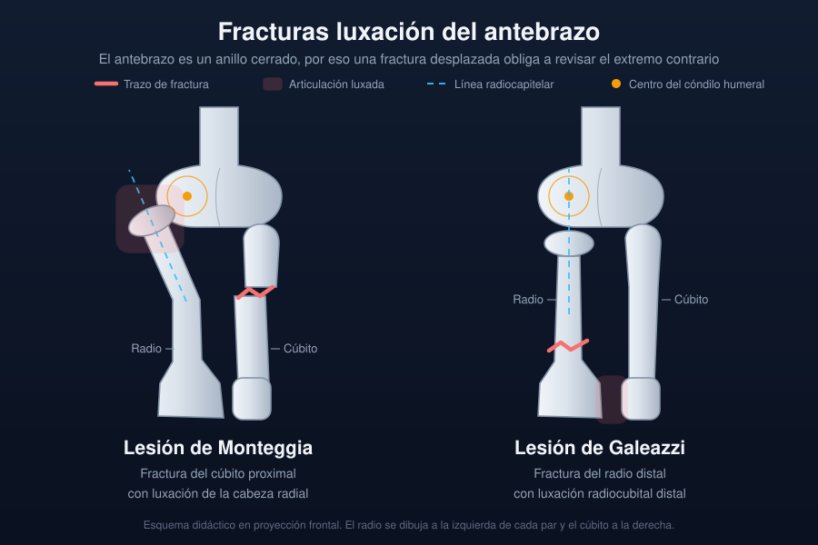

Ficha del catálogo
Fracturas luxación del antebrazo (Monteggia y Galeazzi)
- Sistema
- Óseo
- Modalidad
- RX
- Región
- Antebrazo
- Dificultad
- Intermedio
El antebrazo se comporta como un anillo cerrado por las articulaciones radiocubitales proximal y distal, de modo que una fractura desplazada de un hueso obliga a buscar una luxación en el extremo opuesto. La lesión de Monteggia combina fractura del cúbito proximal con luxación de la cabeza radial. La lesión de Galeazzi asocia fractura del radio distal con desestabilización de la articulación radiocubital distal. Ambas se pasan por alto con facilidad cuando el estudio se centra solo en el hueso fracturado.
Técnica
Proyecciones anteroposterior y lateral del antebrazo que incluyan en el mismo campo el codo y la muñeca. Sin las dos articulaciones visibles no se puede excluir la luxación acompañante.
Qué observar
- Trazo en el tercio proximal del cúbito con angulación de la diáfisis
- Línea radiocapitelar que no pasa por el centro del cóndilo humeral
- Fractura del radio distal con acortamiento respecto al cúbito
- Ensanchamiento de la articulación radiocubital distal en la proyección frontal
- Desplazamiento dorsal de la cabeza del cúbito en la proyección lateral
- Estado de las partes blandas y signos de exposición en traumatismos de alta energía
Hallazgos
Fractura de un hueso del antebrazo acompañada de pérdida de la relación articular en el extremo contrario, con incongruencia radiocapitelar o radiocubital distal.
Perlas
La línea radiocapitelar resuelve la mayoría de los casos. Trazada por el eje del cuello del radio debe atravesar el centro del cóndilo humeral en cualquier proyección y a cualquier edad. Si no lo hace, hay luxación de la cabeza radial mientras no se demuestre lo contrario.
Diagnóstico diferencial
- Fractura aislada de la diáfisis cubital
- La línea radiocapitelar es normal y la cabeza radial permanece centrada.
- Fractura simple del radio distal
- La articulación radiocubital distal conserva su anchura y alineación.
- Luxación congénita de la cabeza radial
- Cabeza pequeña y convexa, sin trazo agudo ni dolor selectivo.
Simuladores
- Proyección oblicua que desalinea de forma aparente la cabeza radial
- Superposición de férula o yeso sobre el trazo
- Núcleos de osificación del codo en el paciente pediátrico
Por modalidad
- RX
- Diagnóstico y control tras la reducción
- TC
- Define fragmentos intraarticulares y reducciones incongruentes
- RM
- Reservada para valorar el complejo fibrocartilaginoso y la membrana interósea
Protocolo
Serie de antebrazo con codo y muñeca incluidos, repetida tras la reducción. Tomografía cuando persiste incongruencia articular o se sospecha fragmento libre.
Clasificación
La lesión de Monteggia se subdivide según la dirección de la luxación de la cabeza radial y la angulación del cúbito. La de Galeazzi se gradúa por el grado de inestabilidad radiocubital distal.
Errores frecuentes
- Radiografiar solo el segmento doloroso y omitir la articulación vecina
- No trazar la línea radiocapitelar en las dos proyecciones
- Dar por buena una reducción sin comprobar la articulación radiocubital distal

antebrazo monteggia galeazzi cubito radio luxacion linea radiocapitelar